Dominio Active Directory multi-DC, integración de clientes Windows y Linux, almacenamiento redundante, logs centralizados, contenedores, monitorización, backups y automatización — todo montado y documentado de principio a fin.
Siete máquinas virtuales sobre VMware Workstation, en red interna 192.168.100.0/24. El diagrama 3D de arriba representa esta misma topología.
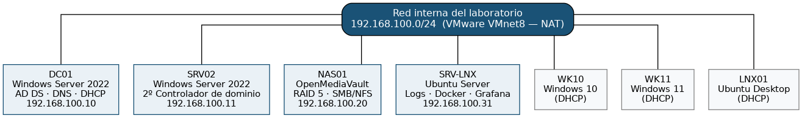
Cada fase incluye su propio desarrollo técnico, comandos utilizados y capturas de verificación en la memoria completa.
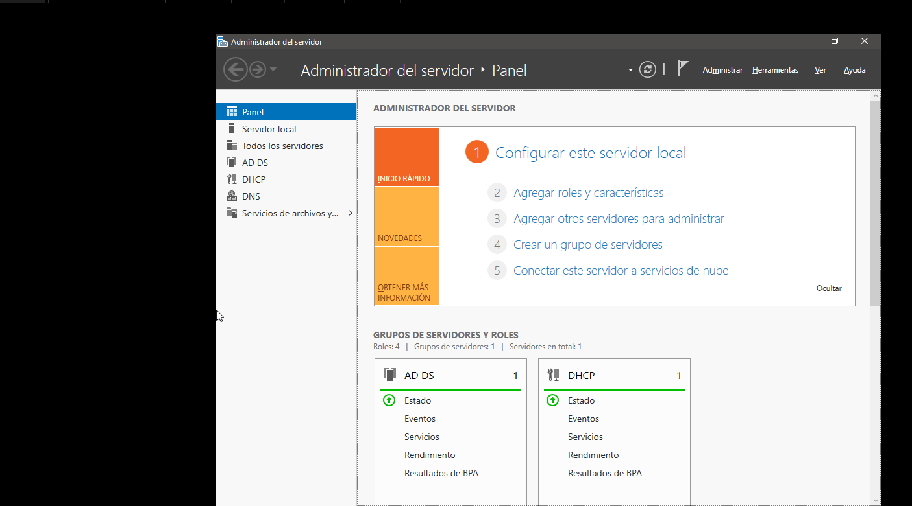
Instalación de Windows Server 2022 y despliegue de AD DS, DNS y DHCP sobre DC01.
Completado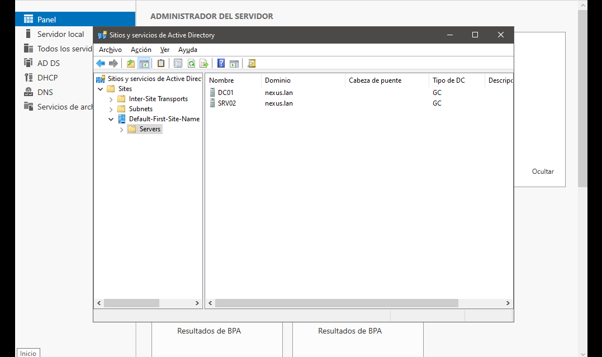
Redundancia del directorio activo con SRV02 y verificación de la replicación multimaestro.
Replicación en diagnóstico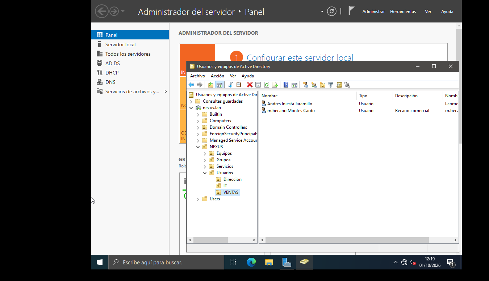
Estructura de UO por departamento, usuarios y grupos de seguridad (modelo AGDLP).
Completado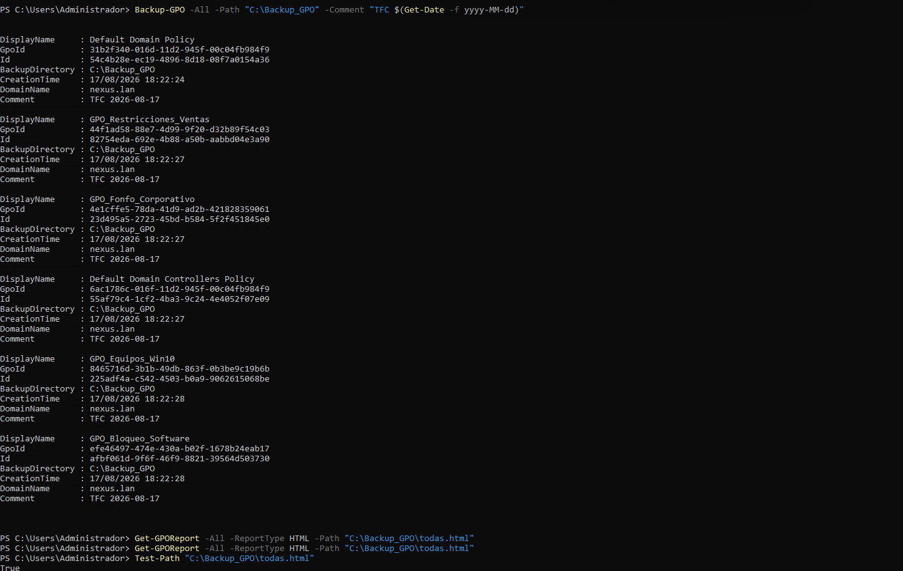
Creación, vinculación y copia de seguridad de GPO mediante PowerShell.
Completado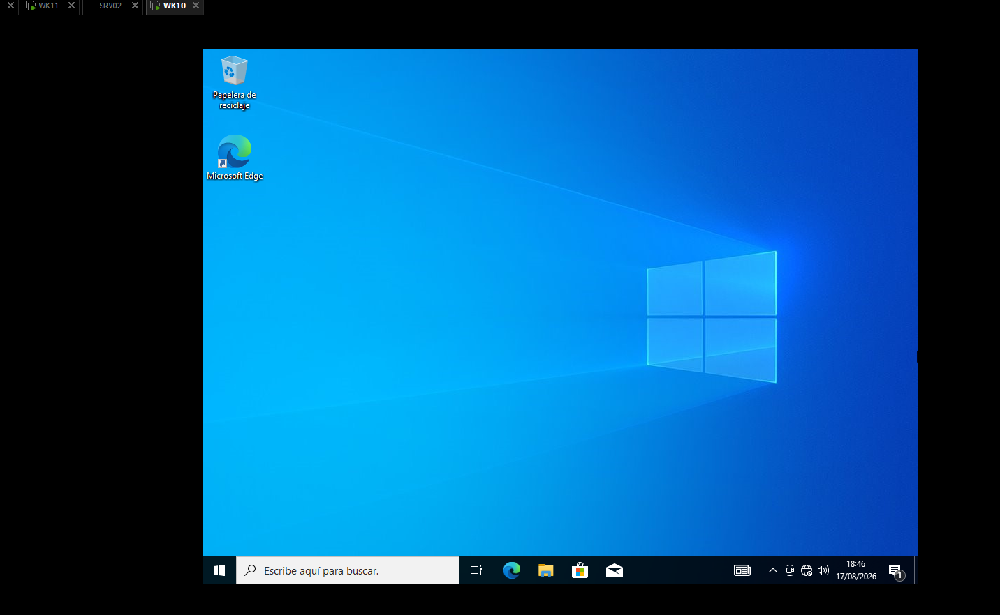
Incorporación de WK10 y WK11, con prueba de control de acceso positiva y negativa.
Completado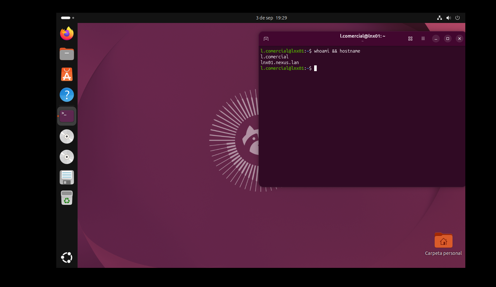
Integración de Ubuntu mediante realmd, sssd y Kerberos.
Completado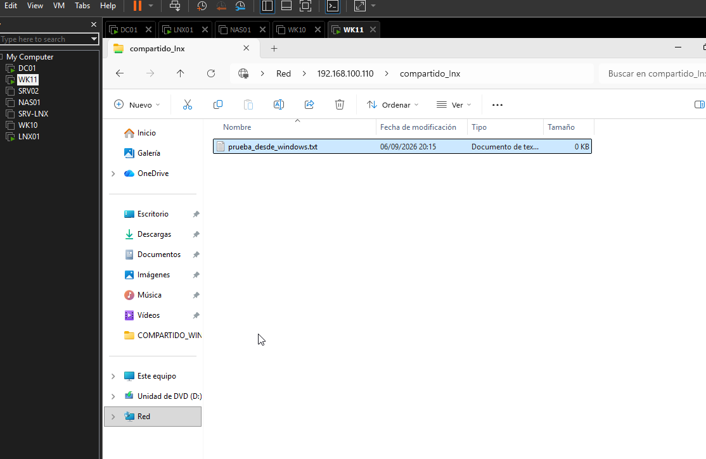
Interoperabilidad Windows/Linux, con diagnóstico y corrección de permisos NFS.
Completado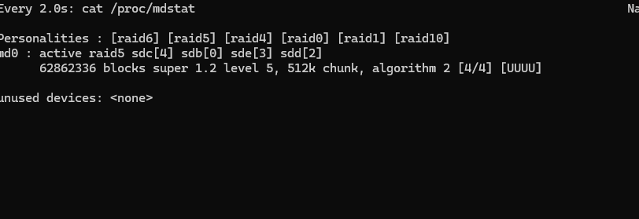
OpenMediaVault con tolerancia a fallos, resolviendo dos incidencias reales durante el proceso.
Completado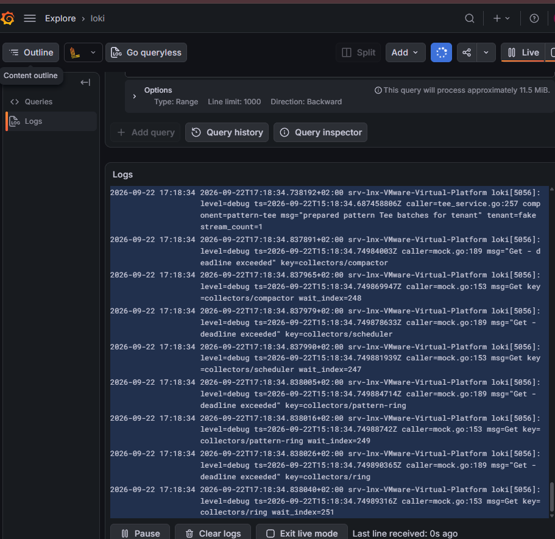
rsyslog + Loki + Promtail, con consulta visual mediante LogQL.
Completado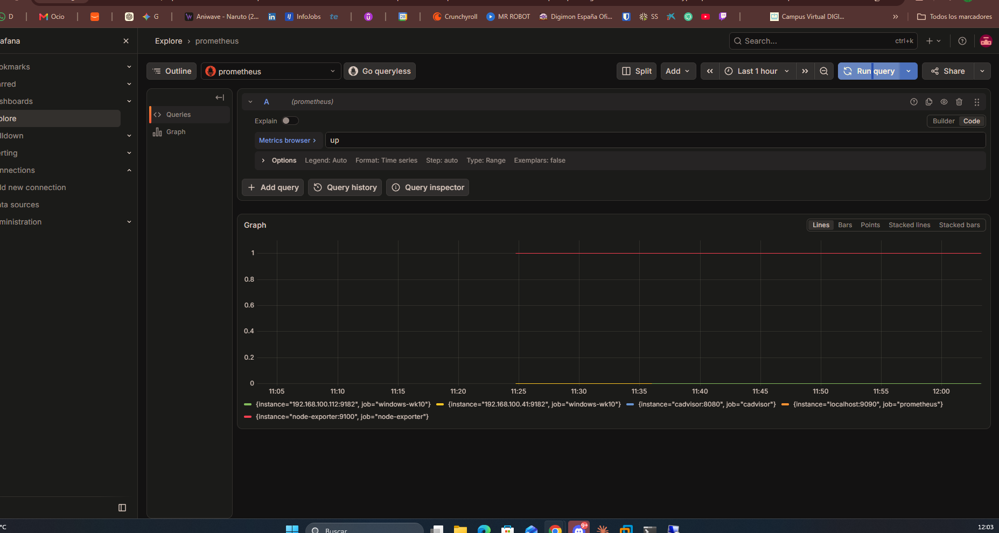
Prometheus, node-exporter, cAdvisor y windows_exporter visualizados en Grafana.
Completado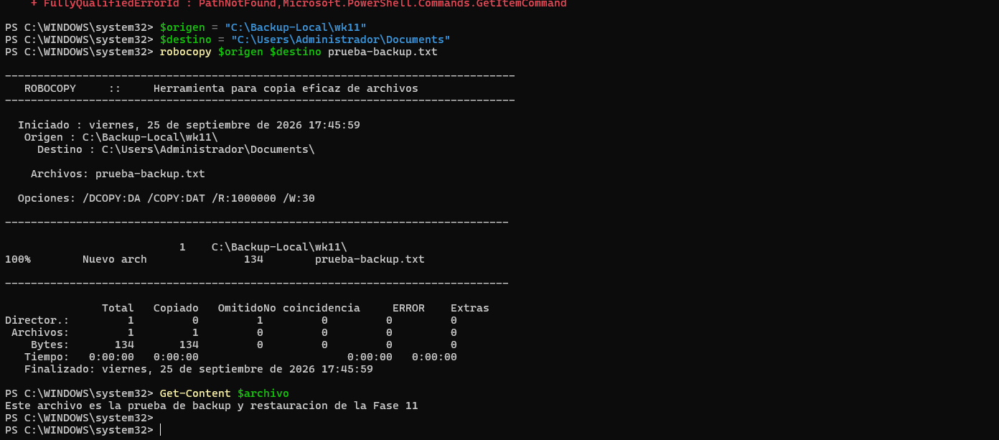
rsync y robocopy con prueba de restauración real, más diagnóstico de una limitación de wbadmin.
Completado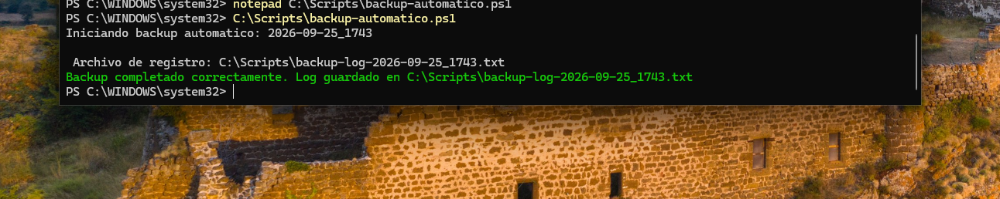
Scripts en PowerShell y Bash, con detección de errores probada deliberadamente.
CompletadoTecnologías utilizadas a lo largo de todo el proyecto.